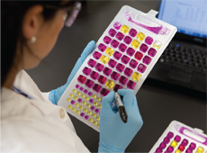
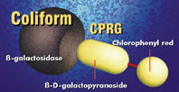
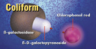
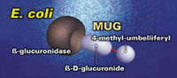
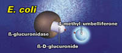

沪公网安备 31011202012026号
沪公网安备 31011202012026号
|
 Colisure®便于检测有背景颜色水中总大肠菌群和 大肠埃希氏菌及粪大肠菌群 ● 24 小时检出结果，48 小时内读数结果均有效。 ● 独特的粉红色阳性判断标准极大地降低了阳性结果误判概率。 ● Colisure 也可以抑制大量非大肠菌群生长其中包括气单胞菌。 ● Colisure 经过美国 EPA 认证，现已录入《水与废水标准检测 方法》。 ● 读取结果：样品变为粉红色表明存在大肠菌群，发荧光时 表明存在大肠埃希氏菌
|
英文品名：Colisure® 中文品名：无 制 造 商：IDEXX 产 地：美国
检测水样：水源水，饮用水 检测对象：总大肠菌群/大肠埃希氏菌/粪大肠菌群 检测内容：定性检测、定量检测 检测体积：100ml 检测时间：24-48 小时内读取均有效
货号：98-13174-00 规格：200个/盒 保存条件：2℃~25℃ 有效期：12个月
|
 使用方法
使用方法
使用方法： 使用IDEXX无菌取样瓶、51孔定量盘®、97孔定量盘®进行定性或定量检测
原理
Colisure® 利用固定底物技术酶底物法® (DST®) 营养指示剂 CPRG 和 MUG 来检测总大肠菌群及大肠杆菌。

大肠菌群利用其 β-半乳糖苷酶分解代谢 CPRG 并使其从黄色变为粉红色。

大肠杆菌利用 β-葡糖醛酸酶分解代谢 MUG 并产生荧光。
优势
1.简单
阳性结果显粉红色，容易识别。
操作便捷，简单培训。
单剂量包装，无需配置培养基。
质控 (QC) 步骤可在 15 分钟内完成。
2.快速
手工操作时间小于 1 分钟。
24 小时内同时检测大肠菌群和大肠杆菌。
无需验证实验。
无需清洗玻璃器皿或菌落计数。
3.准确
24 小时检出结果，48 小时内读数结果均有效。
特异性检测大肠杆菌，排除不必要的公认非目标微生物干扰。
每 100 mL 水样中可以抑制 200 万个异养杂菌。
排除传统方法中的主观解释。
每个样品可检测 1 个大肠菌群或大肠杆菌。
4.经济
能有效减少晚上和周末加班工作。
2-25°C 下可保存 12 个月。
5.灵活
Colisure® 快检套件可用于定性或定量检测。
定量盘® 无需稀释每 100 mL 可检出 200 MPN 值。
定量盘®/2000 无需稀释每 100 mL 可检出 2,419 MPN 值。
文献资料
 标准认证下载
标准认证下载
1-科立得,Colilert-18,Colisure,51孔及97孔定量盘通过“水与废水标准检测方法”21版认证（英文版-2005年）
2-.科立得,Colilert-18，Colisure，51孔及97孔定量盘通过牙买加用于检测所有水样类型的认证（英文版-2008年）
3-科立得，Colilert-18，Colisure，51孔及97孔定量盘通过美国食品药品监督局（FDA）用于检测瓶装水的水源水（英文版-2009年）
4-科立得,Colilert-18,Colisure通过国际瓶装水协会（IBWA）认证（英文版-1999年）
5-科立得,Colilert-18,Colisure通过哥伦比亚认证（英文版-1998年）
6-科立得及Colisure通过新西兰认证（英文版-1997年）
7-酶底物法通过萨尔瓦多用于检测饮用水中大肠埃希氏菌及菌落总数认证（英文版-2006年）
8-科立得,Colilert-18,Colisure,51孔及97孔定量盘通过加拿大安大略用于检测饮用水认证（英文版-2008年）
9-科立得,Colilert-18,Colisure,51孔及97孔定量盘通过斯洛伐克水质检测认证（英文版-2007年）
10-科立得, Colisure,51孔及97孔定量盘通过危地马拉用于检测饮用水及水源水（英文版-2007年）
11-Colisure通过美国EPA认证（英文版-1994年）
12-Colisure通过美国EPA定量检测水样认证（英文版-2001年）
13-科立得,Colilert-18,Colisure,Enterolert通过美国EPA用于检测地表水认证（英文版-2006年）
14-科立得,Colilert-18,Colisure通过食品药品监督局（FDA）用于乳品用水检测认证（英文版-2009年）
15-科立得,Colilert-18,Colisure通过WHO（世界卫生组织）认证（英文版-1996年）
16-科立得,Colilert-18,Colisure通过加拿大各省和地区认证（英文版-2009年）
 技术文献下载
技术文献下载
1-水与废水标准检测方法检测大肠菌群-20版（英文版-1998年）
2-科立得，Colilert-18，Colisure可用于检测药物用途水样（英文版-2009年）
5-国际瓶装水协会（IBWA）推荐使用科立得（英文版-1999年）
6-美国EPA通过Colisure24小时检测水样5（英文版-1999年）